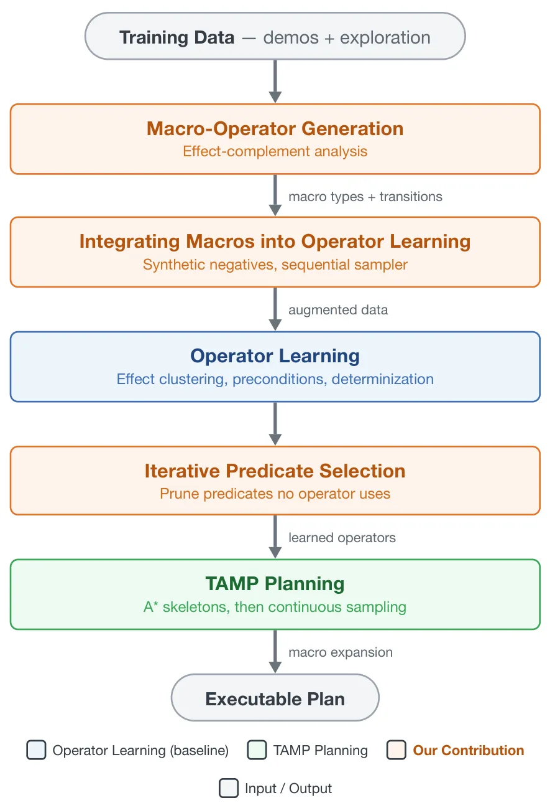
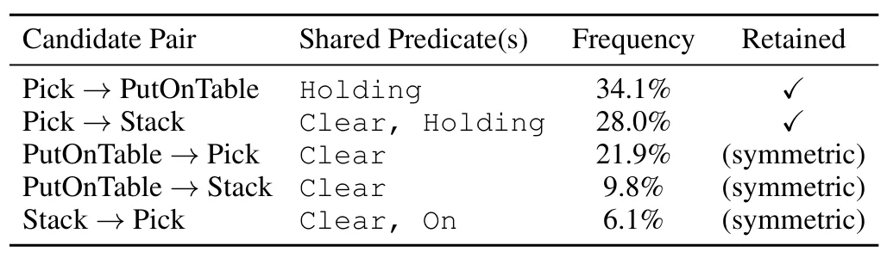
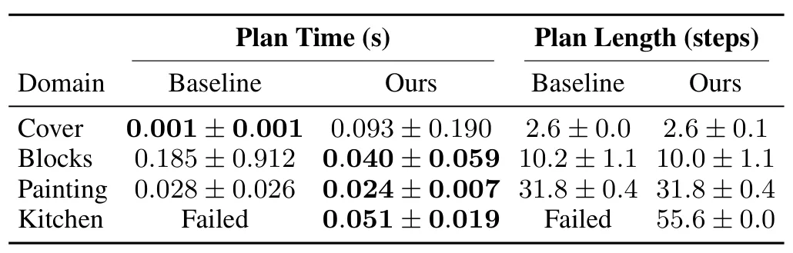
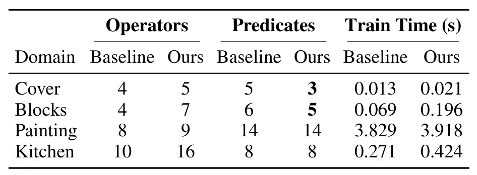
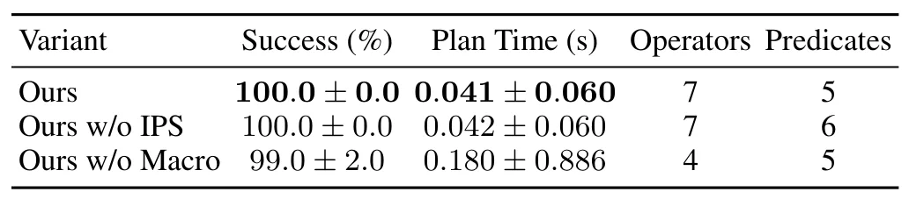
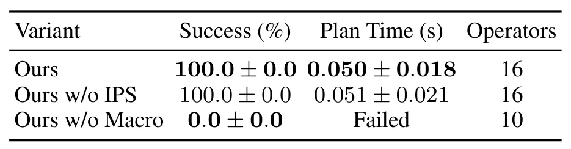

TAMP 算子学习的宏算子生成与谓词选择Macro-Operator Generation and Predicate Selection for TAMP Operator Learning
与定位建图不直接相同，但面向 TAMP 的搜索效率和长时序可解性，适合跟踪具身系统中的规划层融合。
一句话工作总结
虽非 SLAM 算法，但对地图语义、任务规划和操作机器人系统的符号—几何耦合有直接启发。
摘要
该系统从示范数据中发现因果相连的动作对，将重复的多步序列压缩为宏算子，并删除任何学习到的算子都不引用的谓词，从而缩小搜索时的符号状态。在四个 TAMP 领域中，报告最高 4.6 倍规划加速，并解决一个基线无法完成的长序列任务。
Creating symbolic operators by hand is one of the main bottlenecks in deploying Task and Motion Planning systems (TAMP). Recent works show that these operators can instead be learned directly from demonstration data. Existing methods, however, typically learn each action in isolation and cannot capture the recurring multi-step structure of manipulation tasks, so the search becomes intractable on long sequential tasks. A further inefficiency arises in the symbolic state: every provided predicate is evaluated at every search node, even when it never appears in any learned operator. We present a system that addresses both problems together. Its central component is the automatic generation of macro-operators, composite actions that compress a recurring sequence of individual actions into a single planning step. Our system discovers causally linked action pairs directly from the training data, where one action produces exactly the condition that the next one requires, and turns each pair into a new operator. Alongside this, our system prunes every predicate that no learned operator references, which shrinks the symbolic state evaluated at each search node. Together, these changes shorten the effective planning horizon, and the benefit they bring grows with the length of the task. Across four TAMP domains, our method reaches up to a 4.6x planning speedup compared to the baseline method, namely Learning Operators for TAMP. More importantly, it solves a long sequential task that the baseline cannot solve. Macro-operator discovery thus not only accelerates planning but, in certain domains, determines solvability in practice.
中文解读摘录
- 中文名：Luce：用于三维资产生成的可重光照高斯表示
- 方向：3DGS、三维资产生成、PBR、可重光照。
- 要点：把几何与 PBR 材质统一到体素化多模态 Gaussian cloud，用 VAE 和 rectified-flow transformer 从单图生成可重光照高斯，并可导出带法线图的纹理网格；在 Toys4K 上报告 FID 较强基线提升 28%。
- 判断：本轮三维重建候选中表示链路最完整，但不是 SLAM 算法。
图表/页面预览

{kind=link}

{kind=link}

{kind=link}

{kind=link}

{kind=link}

{kind=link}
